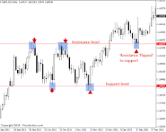
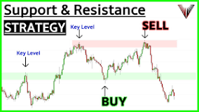
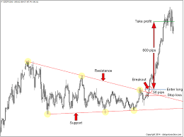
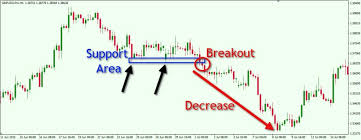
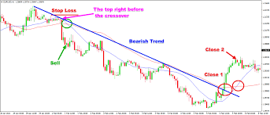
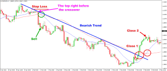
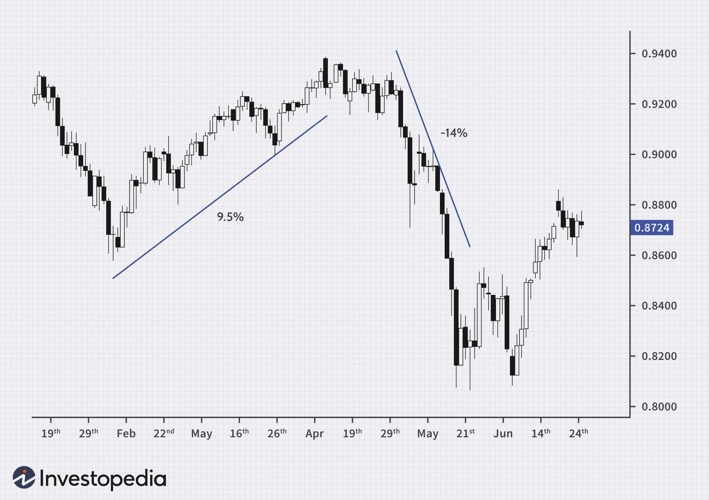
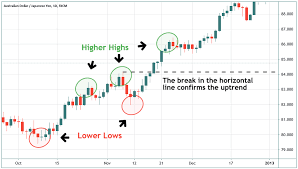

Class 1
Support and ResistanceYou may be passionate about trading Forex, but that does not mean that jumping headfirst into the trading will do you any good. Like all other professions, Forex needs training too. A period of theoretical education followed by a period of apprenticeship is what makes traders market ready.
A support and resistance trading strategy involves buying at support and selling at resistance, or vice versa. The trader can use different indicators or signals to confirm the entry and exit points, such as candlestick patterns, volume, oscillators, or breakouts. The trader can also use stop-loss orders and take-profit orders to protect their positions and lock in profits.
One of the advantages of support and resistance trading strategy is that it can work in any market condition, whether it is trending or ranging. Another advantage is that it can offer a favorable risk-reward ratio, as the trader can place their stop-loss close to the support or resistance level, and target a larger profit margin.
How to figure out levels of Resistance and Support?
This is the most straightforward way of plotting support and resistance levels. Mark visible highs and lows on your chart; the higher highs and lower highs will serve as resistance levels, whereas the lower lows and higher lows will serve as support levels. It is always recommended that these lines be marked on longer timeframes to have reliable support and resistance levels.
Breakout Trading
Support and resistance levels do not hold the price hostage. That means they can be breached. Prices usually breakout after a prolonged period of consolidation, and this offers traders a great deal of opportunity. A breakout is usually the start of a new trend, which means traders have an opportunity to ride out an entire trend from its very beginning. When the price breaches a support line, it implies that a downtrend is now in place and traders should look to place sell orders; whereas a resistance line breach implies an uptrend is in place, and traders should look to place buy orders.
 Class 2
Education is essential in trading. Traders should always be learning and improving their skills. The market is constantly changing, and traders must adapt to those changes. The more traders learn, the more they can refine their trading strategies and take advantage of them. Breakout StrategyThis strategy involves identifying a price level where the asset’s price has been consolidating for an extended period and then placing a trade when the price breaks out of that range. This strategy is based on the assumption that once the price breaks out of the consolidation range, it will continue to move in the same direction.
How to Trade Breakouts Using Trend Lines When drawing trend lines, it is best if you can connect at least two tops or bottoms together. The more tops or bottoms that connect, the stronger the trend line. So how can you use trend lines to your advantage? When the price approaches your trend line, only two things can happen. 1. The price could bounce off the trend line and continue the trend. 2. The price could break out through the trend line and cause a reversal.
 Class 3
Preparation is key to success in any field, and trading is no exception. Traders must be willing to put in the time and effort to plan their trading day. The ever-changing market conditions keep even top traders on their toes and push them to prepare carefully before placing an order. Moving Average Crossover StrategyThis strategy involves using two moving averages of different periods to identify the trend. When the shorter-term moving average crosses above the longer-term moving average, it is considered a bullish signal, and traders may look to buy. Conversely, when the shorter-term moving average crosses below the longer-term moving average, it is considered a bearish signal, and traders may look to sell.
How do you find the moving average crossover?
All you must do is plop on a couple of moving averages on your chart and wait for a crossover. If the moving averages cross over one another, it could signal that the trend is about to change soon, thereby giving you the chance to get a better entry. By having a better entry, you have the chance to bag more pips!
 

Class 4
Carry Trade StrategyThis strategy involves borrowing in a low-interest-rate currency and investing in a high-interest-rate currency. The idea is to profit from the interest rate differential between the two currencies. This strategy is best suited for traders who have a long-term outlook and are willing to hold positions for an extended period.
Practical Example
Say, for example, a trader notices that the rate of the Japanese yen is 0.5%, while the rate of the Australian dollar is 4%. The trader aims to make a profit of up to 3.5%, which is the difference between the two rates. He will then carry an FX carry trade by borrowing Japanese yen and converting it into Australian dollars. The trader will then invest the dollars into a security that pays the AUD rate. After the maturity of the investment, the trader will then reconvert the investment proceeds back to the Japanese yen, with the intention of making some risk-free profit by using the interest rate spread between the two currencies. If the exchange rate moves against the yen, the trader will profit even more. However, if the yen got stronger, the trader would have earned less than the 3.5% interest spread or might have even incurred a loss.
 